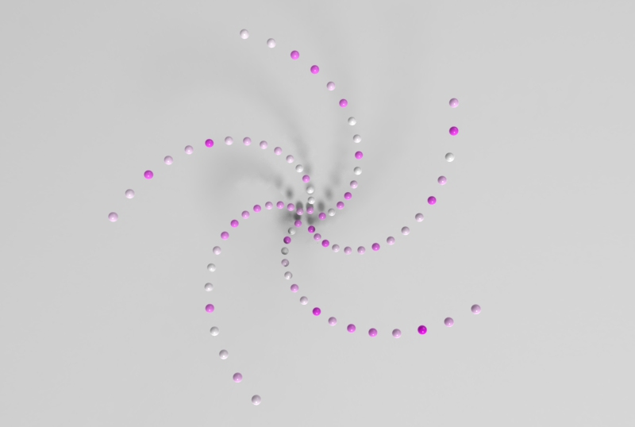
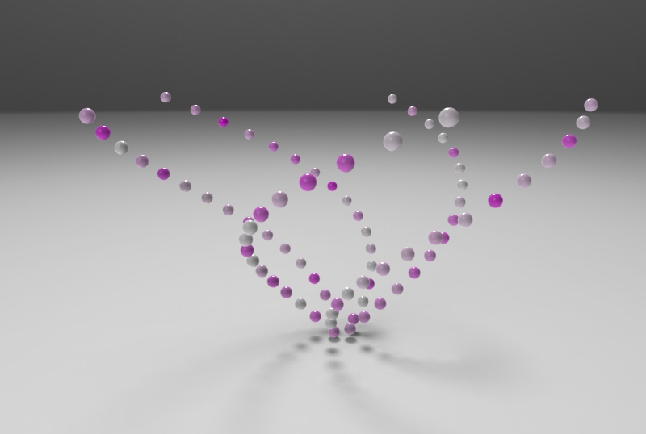
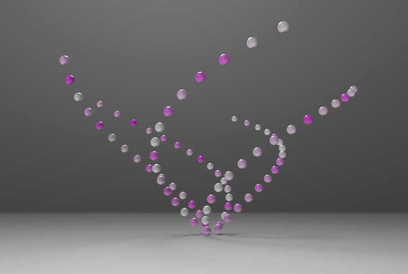
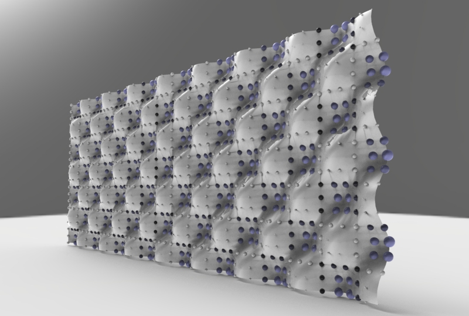
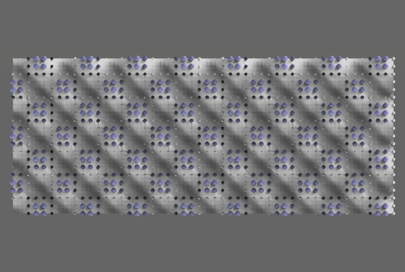
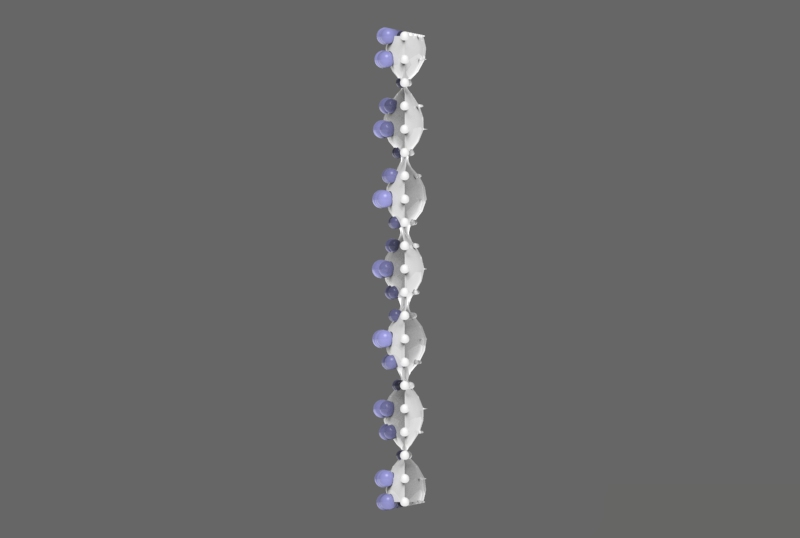
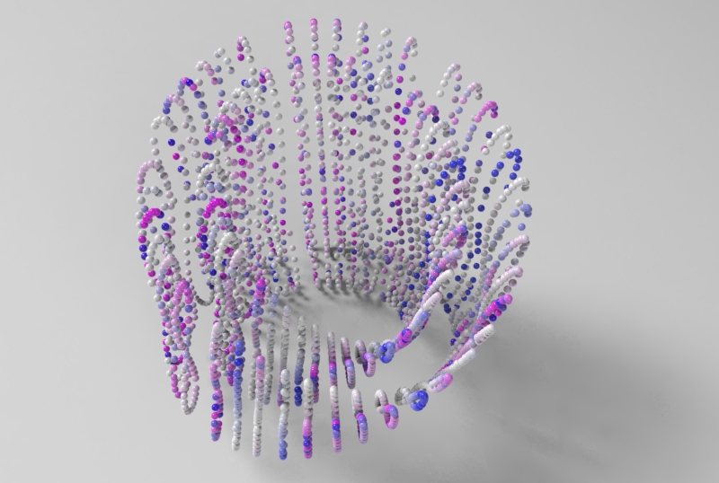
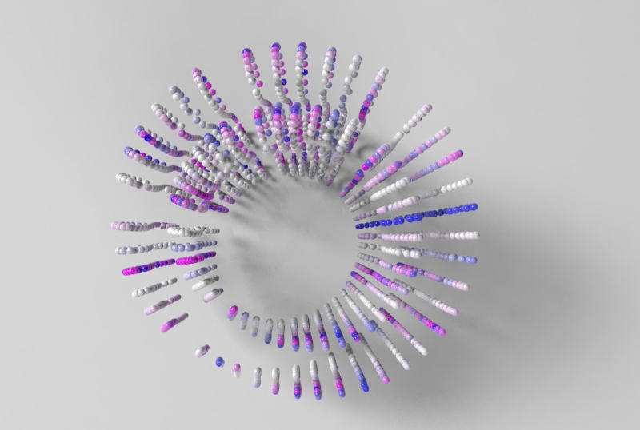
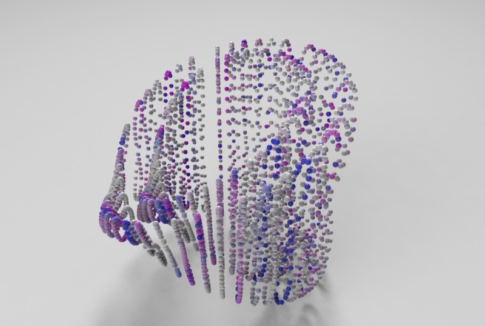

Rhino.Python 1D 2D 3D
Part 1 of 4 of Series Rhino.Python











""" #################################################################### Computational Design Assignment 02 Kao, Ting-Chun Assignment to use for loop #################################################################### """ from scriptcontext import doc, escape_test import rhinoscriptsyntax as rs import Rhino.Geometry as rg import Rhino.DocObjects as rd import Rhino import time import System.Guid as guid import System.Drawing as sd import math import random dimension = rs.GetInteger("give me one to three dimension: ", 2, 1, 3) print(dimension) # some functions def PtMat(x, y, z): pt = rg.Point3d(x, y, z) materialIndex = doc.Materials.Add() material = doc.Materials[materialIndex] if dimension == 2: if x > 0 and y>0 and z>0: material.DiffuseColor = sd.Color.FromArgb(y/5*255*0.5, y/5*255*0.5, y/5*255) else: material.DiffuseColor = sd.Color.FromArgb( 255, abs(math.sin(x))*255, 255) material.CommitChanges() attr = Rhino.DocObjects.ObjectAttributes() attr = rd.ObjectAttributes() attr.MaterialSource = Rhino.DocObjects.ObjectMaterialSource.MaterialFromObject attr.MaterialIndex = materialIndex if dimension == 2: sphere = rg.Sphere(pt, (y+5)/5) elif dimension == 3: sphere = rg.Sphere(pt, 0.2) else: sphere = rg.Sphere(pt, 2) if doc.Objects.AddPoint(pt, attr) != guid.Empty: doc.Objects.AddSphere(sphere, attr) return pt def noneLoopPt(): pt = PtMat(i*math.sin(5*i), i*math.cos(5*i), i) return pt def oneLoopCrv(): pts = [] for x in range(50): y = math.sin(x) * math.sin(i) pts.append(PtMat(5*x, 5*y, 5*i)) crv = rs.AddCurve(pts) return crv def twoLoopCrv(): pts = [] crvs = [] for x in range(30): for y in range(40): a = ( i + math.cos(x/2)*math.sin(y) - math.sin(x/2)*math.sin(2*y) ) * math.cos(x) b = ( i + math.cos(x/2)*math.sin(y) - math.sin(x/2)*math.sin(2*y) ) * math.sin(x) c = 10*math.sin(x/2)*math.sin(y) - math.cos(x/2)*math.sin(2*y) pts.append(PtMat(a, b, c)) crv = rs.AddCurve(pts) crvs.append(crv) return crvs def threeLoopSrf(): # haven't getten any idea to having a good one. return 0 def drawTime(): FPS = 30 last_time = time.time() # setup variables global i i = 3 curves = [] pts = [] # whatever the loop is... while True: # draw animation if dimension == 3: i += 3 else: i += 1 # pause so that the animation runs at 30 fps new_time = time.time() # see how many milliseconds we have to sleep for # then divide by 1000.0 since time.sleep() uses seconds sleep_time = ((1000.0 / FPS) - (new_time - last_time)) / 1000.0 if sleep_time > 0: time.sleep(sleep_time) last_time = new_time if dimension == 2: crv = oneLoopCrv() curves.append(crv) if i > 20: rs.AddLoftSrf(curves) break elif dimension == 3: curves = twoLoopCrv() escape_test() else: pt = noneLoopPt() pts.append(pt) if i > 80: #rs.AddLoftSrf(curves) rs.AddCurve(pts) break escape_test() def main(): drawTime() if __name__ == "__main__": main()